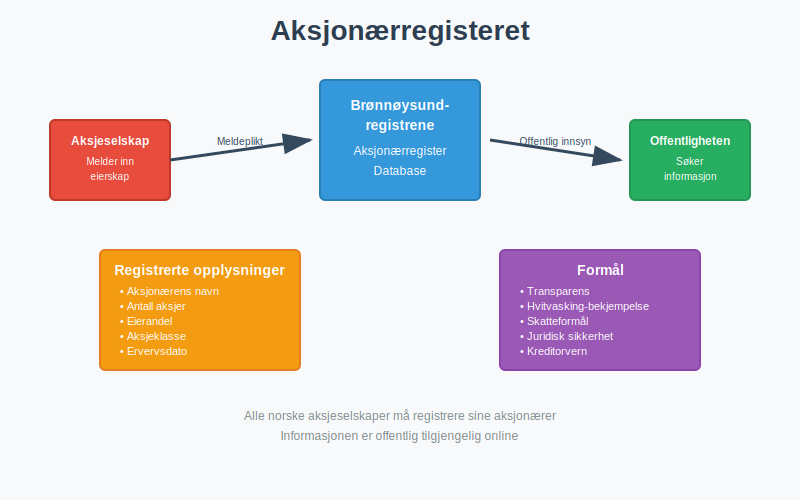
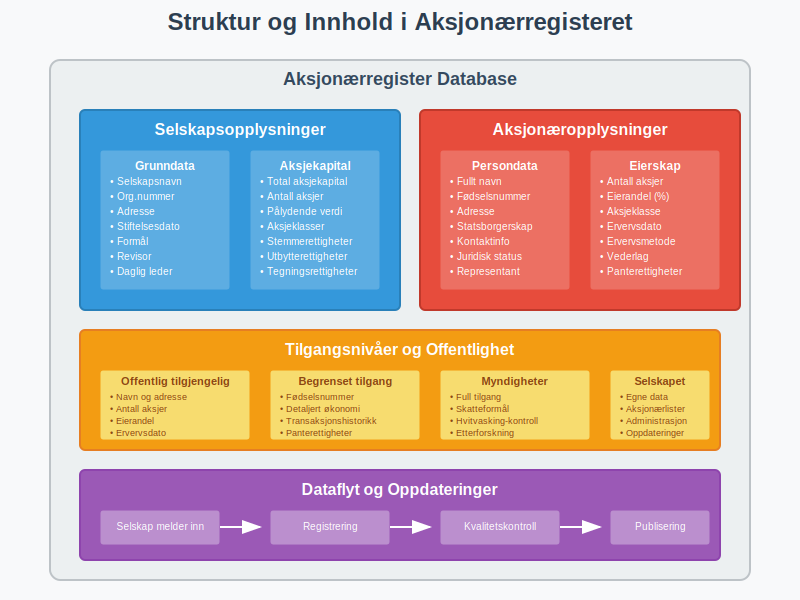
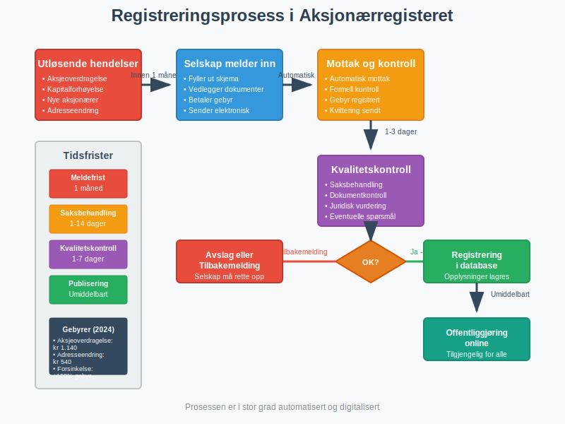
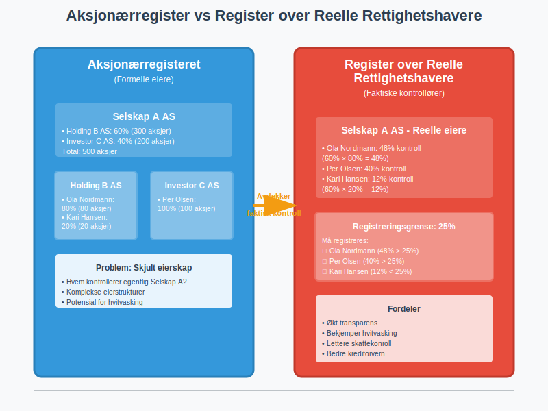
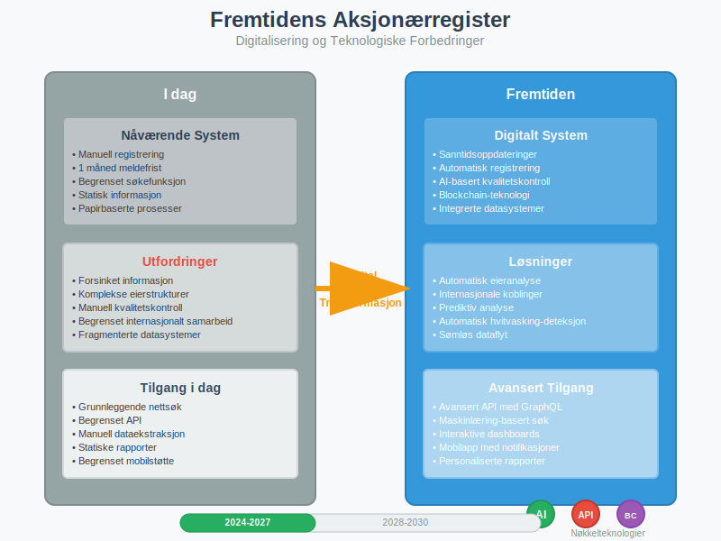

Aksjonærregisteret er et offentlig register som inneholder informasjon om alle aksjonærer i norske aksjeselskaper (AS). Registeret administreres av Brønnøysundregistrene og gir innsyn i eierskap og eierstruktur i norske selskaper.

Hva er Formålet med Aksjonærregisteret?
Det er viktig å skille mellom Aksjonærregisteret og selskapets egen aksjeeierbok.
- Aksjeeierboken er selskapets interne, løpende register over eiere. Denne må være oppdatert til enhver tid og danner grunnlaget for eiernes rettigheter.
- Aksjonærregisteret er den årlige, offentlige rapporteringen til myndighetene, basert på informasjonen i aksjeeierboken per 31. desember. Denne rapporteringen skjer via aksjonærregisteroppgaven (RF-1086).
Aksjonærregisteret har flere viktige formål i det norske samfunnet:
- Transparens og åpenhet: Sikrer offentlig innsyn i hvem som eier norske selskaper
- Bekjempelse av hvitvasking: Hjelper myndigheter med å spore pengestrømmer og eierskap
- Skatteformål: Gir skattemyndighetene oversikt over eierskap og kapitalstruktur
- Juridisk sikkerhet: Beskytter aksjonærer og kreditorer ved å dokumentere eierforhold
Hvilke Opplysninger Registreres?
Aksjonærregisteret inneholder detaljert informasjon om både selskaper og deres eiere. Her er en oversikt over de viktigste opplysningene:
Opplysninger om Aksjonærer
| Opplysningstype | Beskrivelse | Offentlig tilgjengelig |
|---|---|---|
| Navn | Fullt navn på aksjonær | Ja |
| Fødselsnummer/Org.nr | Identifikasjon av aksjonær | Delvis* |
| Adresse | Bostedsadresse | Ja |
| Antall aksjer | Hvor mange aksjer som eies | Ja |
| Aksjeklasse | Type aksjer (A-aksjer, B-aksjer) | Ja |
| Eierandel | Prosentvis eierandel i selskapet | Ja |
| Ervervsdato | Når aksjene ble ervervet | Ja |
*Fødselsnummer vises kun delvis av personvernhensyn
Opplysninger om Selskapet
- Selskapsnavn og organisasjonsnummer
- Aksjekapital og antall aksjer
- Aksjeklasser og deres rettigheter
- Styre og daglig leder
- Revisor og revisjonsplikt

Hvem Har Tilgang til Aksjonærregisteret?
Tilgangen til aksjonærregisteret er gradert basert på hvem som spør og hvilket formål de har:
Offentlig Tilgjengelig Informasjon
Alle kan få tilgang til:
- Aksjonærens navn og adresse
- Antall aksjer og eierandel
- Aksjeklasse
- Ervervsdato
Begrenset Tilgang
Visse opplysninger er kun tilgjengelige for:
- Offentlige myndigheter (skatt, politi, finanstilsyn)
- Selskapet selv og dets representanter
- Andre aksjonærer i samme selskap
- Kreditorer med berettiget interesse
Hvordan Fungerer Registreringen?
Registreringen i aksjonærregisteret skjer automatisk når det skjer endringer i eierskap. Her er prosessen:

Meldeplikt for Selskaper
Aksjeselskaper har meldeplikt til aksjonærregisteret når:
- Nye aksjonærer kommer til
- Eksisterende aksjonærer endrer sin eierandel
- Aksjer overføres mellom parter
- Aksjekapitalen endres
- Nye aksjeklasser opprettes
Frister og Sanksjoner
| Hendelse | Meldefrist | Sanksjon ved forsinkelse |
|---|---|---|
| Aksjeoverdragelse | 1 måned | Gebyr kr 1.140 |
| Kapitalforhøyelse | 1 måned | Gebyr kr 1.140 |
| Endring av aksjeklasser | 1 måned | Gebyr kr 1.140 |
| Adresseendring | 1 måned | Gebyr kr 540 |
Reelle Rettighetshavere
I tillegg til aksjonærregisteret finnes det et eget register over reelle rettighetshavere. Dette registeret fanger opp:
- Indirekte eierskap gjennom holdingselskaper
- Kontroll gjennom stemmerettigheter
- Økonomisk interesse gjennom andre konstruksjoner

Terskelverdi for Registrering
Reelle rettighetshavere må registreres når de:
- Eier 25% eller mer av aksjene
- Har 25% eller mer av stemmene
- Har kontroll på annen måte
Praktiske Konsekvenser for Aksjonærer
Som aksjonær i et norsk aksjeselskap påvirker aksjonærregisteret deg på flere måter:
Personvern og Offentlighet
- Ditt navn og eierskap er offentlig tilgjengelig
- Fødselsnummer vises kun delvis
- Adresse er offentlig, men kan være c/o-adresse
Skattemessige Konsekvenser
Aksjonærregisteret brukes av skattemyndighetene til:
- Kontroll av utbytte og kapitalgevinster
- Verifikasjon av aksjonærlån
- Overvåking av lån til selskapet
Digitalisering og Fremtiden
Aksjonærregisteret er i stadig utvikling med fokus på:
Teknologiske Forbedringer
- Sanntidsoppdateringer av eierskap
- Bedre søkefunksjonalitet for offentligheten
- API-tilgang for profesjonelle brukere
- Integrering med andre offentlige registre
Økt Transparens
- Utvidet rapportering av komplekse eierstrukturer
- Bedre sporing av internasjonale eiere
- Styrket kontroll med hvitvasking

Internasjonalt Perspektiv
Norge er ikke alene om å ha et offentlig aksjonærregister. Mange land har lignende systemer:
Sammenligning med Andre Land
| Land | Offentlig tilgang | Reelle rettighetshavere | Gebyr for innsyn |
|---|---|---|---|
| Norge | Ja | Ja | Gratis online |
| Danmark | Ja | Ja | Gratis online |
| Sverige | Ja | Nei | Gratis online |
| Tyskland | Begrenset | Ja | Gebyr |
| Storbritannia | Ja | Ja | Gratis online |
Hvordan Få Tilgang til Informasjon
For å få tilgang til informasjon fra aksjonærregisteret kan du:
Online Søk
- Besøk Brønnøysundregistrenes nettsider
- Søk på selskapsnavn eller organisasjonsnummer
- Få gratis tilgang til grunnleggende informasjon
Utvidet Informasjon
For mer detaljert informasjon:
- Bestill utskrift mot gebyr
- Kontakt selskapet direkte
- Bruk profesjonelle tjenester for omfattende analyser
Juridiske Aspekter og Regelverk
Aksjonærregisteret er regulert av flere lover og forskrifter:
Relevant Lovgivning
- Aksjeloven - grunnleggende regler for aksjeselskaper
- Regnskapsloven - krav til regnskap og rapportering
- Hvitvaskingsloven - regler om reelle rettighetshavere
- Forvaltningsloven - saksbehandling og innsyn
Rettigheter og Plikter
Som aksjonær har du:
Rettigheter:
- Innsyn i egne opplysninger
- Rett til korreksjon av feil
- Beskyttelse av personopplysninger
Plikter:
- Melde adresseendringer
- Oppgi korrekte opplysninger
- Samarbeide ved kontroller
Konklusjon
Aksjonærregisteret er en hjørnestein i det norske selskapsrettslige systemet. Det sikrer transparens, bekjemper økonomisk kriminalitet og gir nødvendig innsyn i eierskap av norske selskaper.
For deg som aksjonær eller som vurderer å investere i aksjer, er det viktig å forstå at ditt eierskap vil være offentlig tilgjengelig. Dette er prisen for å delta i det norske næringslivet, men det gir også trygghet og forutsigbarhet for alle parter.
Registeret vil fortsette å utvikle seg med teknologien, og vi kan forvente enda bedre tilgang til informasjon og økt transparens i årene som kommer.